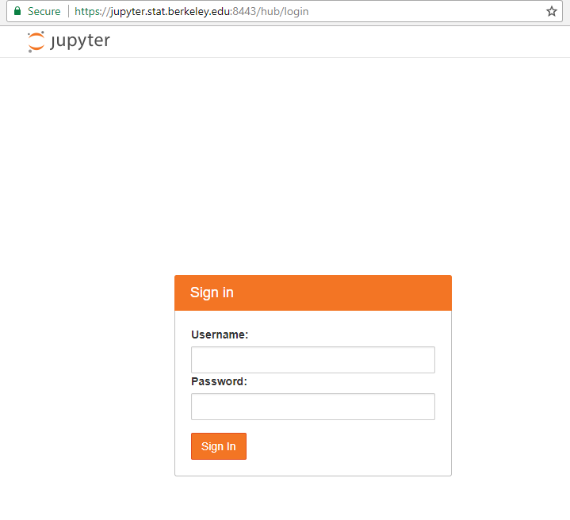

Lab 4¶
First Quiz¶
Today we have our first quiz.
For this (and future) quizes we’ll be using the SCF accounts we set up last time.
On the SCF accounts we’re using nbgrader, a system which allows for instructors to create assignments in Jupyter notebooks and for students to complete and submit assignments in those notebooks.
To access the quiz, navigate to Jupyter Hub on the SCF servers (shortened url: http://bit.ly/2wvKG7r.

Log in with your username (s159-X where X ranges from 1-100) and password that you set up last lab.
To take the quiz, navigate to the “Assignments” tab. Under “Released Assignments” you should see quiz1_lab1. Click on Fetch next to download the assignment, quiz1_lab1 will now move to “Downloaded Assignments”. Complete the questions by clicking on the drop down menu and selecting each problem (p1, p2, and p3). When finished with the assignment, click on “Validate” for each problem to ensure that you’ve completed it, then press “Submit”.

You have 15 minutes to complete the quiz.
Whirlwind Tour of Python¶
For the remainder of the lab we’ll continue to go through the Whirlwind Tour of Python.